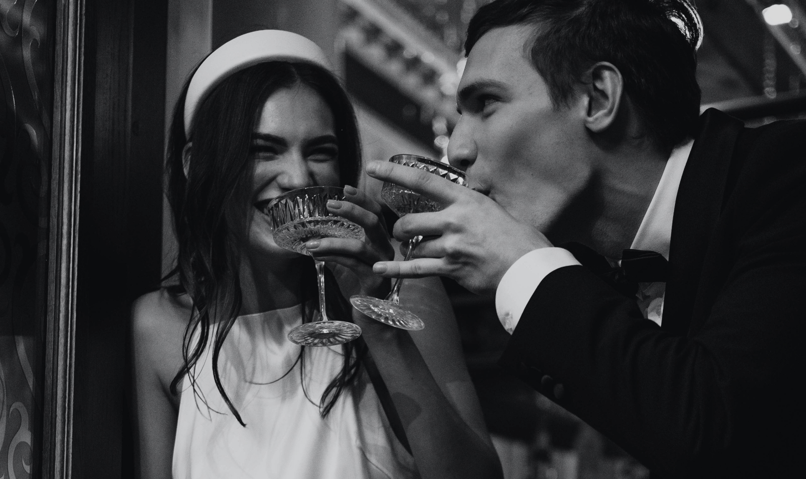
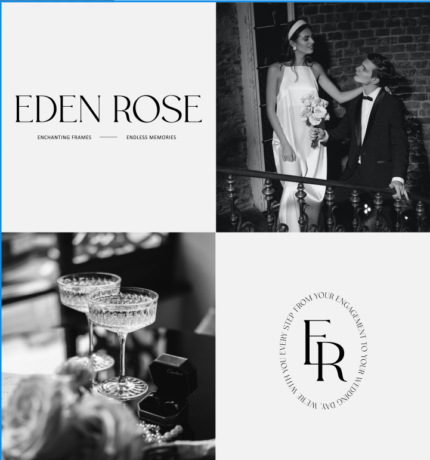
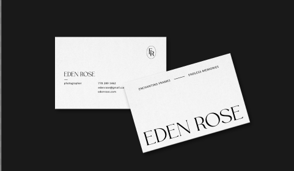
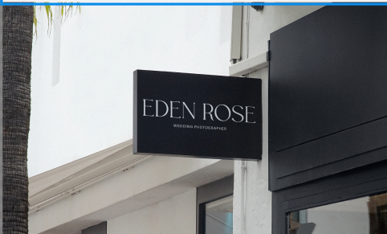

Eden Rose is dedicated to capturing the beauty, joy, and romance of your special day. With a keen eye for detail and a passion for storytelling, her team of skilled photographers creates breathtaking images that will be cherished for a lifetime. From intimate elopements to grand celebrations, they strive to document every precious moment, ensuring that each image reflects the unique love story of the couple. Eden Rose Wedding Photographer Brand guarantees a seamless and unforgettable experience for your wedding day.

Eden Rose exudes elegance, romance, and timeless beauty. With a elegant color palette of black and white, their brand identity evokes a sense of enchantment and sophistication. Meticulous attention to detail and a passion for capturing the most precious moments of love and joy ensure that every couple's special day is immortalized in stunning imagery. Eden Rose is synonymous with professionalism, creativity, and a deep understanding of the unique emotions that come with saying "I do."

The main font used, The Seasons Light, exudes elegance and sophistication, perfectly reflecting the aesthetic of capturing timeless love stories. Complementing it is the secondary font, Calibri Regular, which adds a modern touch and ensures readability. This harmonious combination of fonts creates a visually appealing and cohesive brand image, leaving a lasting impression on clients and making their wedding moments truly unforgettable.

Yuliia Hrabynska
Instagram: @julidesignco
Dribbble: juliDesignCo
Pinterest: @julidesignco
Gmail: juliahrabwork@gmail.com
Creative Market: juliDesignco